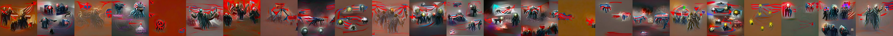

← Async Art — living works · all collections
by Athena Novo · Async Art Master #4785 · hourly · time rule: UTC
Updates each hour in a 24-hour cycle.

24 hourly states (UTC)
Athena's Concept: Politics by Athena Novo 24 piece set in one single artwork, Minted 1/1 on Async Art, 2022 Athena's Concepts are a series of artworks exploring subject matter from sensuality to cats in basic abstract form.
The viewer shows these states from display copies kept with this site (display copies, resized; the originals are on IPFS: the files below). The full-size files are on IPFS; the ones we pin are pinned at Pinata. Each file is stored on IPFS under its CID. The CID belongs to the file, not to any website, so other IPFS gateways can open it too. Three that served our files on 2026-10-06: gateway.pinata.cloud, ipfs.filebase.io, c-ipfs-gw.nmkr.io. Each file below is linked on all three, in the order to try them. Every line says what our own check found: we keep this file pinned: 25; our own copy, pinned by us and verified on upload: 1.
QmZTQ7XtMadXxkUTroa6izY1K9WqXTh1JMWMwb6621YNDv gateway.pinata.cloud · ipfs.filebase.io · c-ipfs-gw.nmkr.io — we keep this file pinned, checked 2026-09-26 17:46QmXkLChF4TrfnCVV9mfABy13k3RsAnJt8xZS3ZxmSiaqDm gateway.pinata.cloud · ipfs.filebase.io · c-ipfs-gw.nmkr.io — we keep this file pinned, checked 2026-09-26 17:46QmZhNZ6TgE2RUvUxUHmEtCJtbRFsWeCe93p8wJWPybpLGS gateway.pinata.cloud · ipfs.filebase.io · c-ipfs-gw.nmkr.io — we keep this file pinned, checked 2026-09-26 17:46QmPS4XKMYRBC2doGSK2kDkwVCnpHww9DQkWu345bmTAdPF gateway.pinata.cloud · ipfs.filebase.io · c-ipfs-gw.nmkr.io — we keep this file pinned, checked 2026-09-26 17:46QmS9L3RgKQ2GMbLFdui5eqvUBatfuTrx67bfRPW7eo5Swm gateway.pinata.cloud · ipfs.filebase.io · c-ipfs-gw.nmkr.io — we keep this file pinned, checked 2026-09-26 17:46QmSbs86rK6rNtbm3H4SoQY7vKzGtMH4pEzKEMPSJULQtha gateway.pinata.cloud · ipfs.filebase.io · c-ipfs-gw.nmkr.io — we keep this file pinned, checked 2026-09-26 17:46QmVLnkdd3Rt8BzteHTGWCCnHgcCZLYu422z6L8o9hKgUwY gateway.pinata.cloud · ipfs.filebase.io · c-ipfs-gw.nmkr.io — we keep this file pinned, checked 2026-09-26 17:46QmTEJubJh1WaqjzDHX3v4VpaiiS5oPJh3e82KyTSQJNWi4 gateway.pinata.cloud · ipfs.filebase.io · c-ipfs-gw.nmkr.io — we keep this file pinned, checked 2026-09-26 17:46QmPeCmqyLMrowtjP2vsL8DKXdUJvXrFxyDzsQjZZYLfgem gateway.pinata.cloud · ipfs.filebase.io · c-ipfs-gw.nmkr.io — we keep this file pinned, checked 2026-09-26 17:46Qme2dCUXtf3dMor8R6JcMGY33fizgon6Gazgnu2QvayAVN gateway.pinata.cloud · ipfs.filebase.io · c-ipfs-gw.nmkr.io — we keep this file pinned, checked 2026-09-26 17:46QmNgTgTmUB3fjGMmYdA9R663o5J5vhGBcsgAtKk6qS3TSk gateway.pinata.cloud · ipfs.filebase.io · c-ipfs-gw.nmkr.io — we keep this file pinned, checked 2026-09-26 17:46QmVtwWgNKa7JMqNMuwuJgexrgdq3xfvdMSfgPtYX4crWXR gateway.pinata.cloud · ipfs.filebase.io · c-ipfs-gw.nmkr.io — we keep this file pinned, checked 2026-09-26 17:46QmRGCMcEQayAJSsPZJzFcpRhbnjWYdP9Gjyvd7bVCdh3LQ gateway.pinata.cloud · ipfs.filebase.io · c-ipfs-gw.nmkr.io — we keep this file pinned, checked 2026-09-26 17:46QmWc3rJofccZagp1CCV13tQKkHa6MveMAJQmnyPtEkGwWy gateway.pinata.cloud · ipfs.filebase.io · c-ipfs-gw.nmkr.io — we keep this file pinned, checked 2026-09-26 17:46QmSnVeD9XNcs11uKXq2Vey371c1c3GvzHMP3pGtTnAekYr gateway.pinata.cloud · ipfs.filebase.io · c-ipfs-gw.nmkr.io — we keep this file pinned, checked 2026-09-26 17:46Qma1MPs4HZjYEcDJR1ajD67Lku8ebC31LG4Zwz9oNoraBh gateway.pinata.cloud · ipfs.filebase.io · c-ipfs-gw.nmkr.io — we keep this file pinned, checked 2026-09-26 17:46QmNj9u1XaESCSQpJq5yFyuj92d3Jn4fBuSS1Jwbk1VrhhN gateway.pinata.cloud · ipfs.filebase.io · c-ipfs-gw.nmkr.io — we keep this file pinned, checked 2026-09-26 17:46Qmc5TaMZwKsEjLNP3TPiP7RrHsAWTsc2eHGutPdzGthgKP gateway.pinata.cloud · ipfs.filebase.io · c-ipfs-gw.nmkr.io — we keep this file pinned, checked 2026-09-26 17:46QmWGQVA6j26gKcod1dCVtLzTUoRU2LWFeYAJ2xAW2WfaHE gateway.pinata.cloud · ipfs.filebase.io · c-ipfs-gw.nmkr.io — we keep this file pinned, checked 2026-09-26 17:46QmbXsA7HMeASThLXF9km9FFDKqpTYcWRiADukaY46LV6pW gateway.pinata.cloud · ipfs.filebase.io · c-ipfs-gw.nmkr.io — we keep this file pinned, checked 2026-09-26 17:46QmTSYXPqMYnyBqXREjm9e1zvJGe22qcKf3BWqTnqEUTr4N gateway.pinata.cloud · ipfs.filebase.io · c-ipfs-gw.nmkr.io — we keep this file pinned, checked 2026-09-26 17:46QmbMVWzxvdm2bwQyVEjzKuzGPShpdNfL7apqWbVuYK6DSc gateway.pinata.cloud · ipfs.filebase.io · c-ipfs-gw.nmkr.io — we keep this file pinned, checked 2026-09-26 17:46QmbkthMLDhF4ijsi6gywTNYJxRx2XoaFYPYtxm8uURWaAe gateway.pinata.cloud · ipfs.filebase.io · c-ipfs-gw.nmkr.io — we keep this file pinned, checked 2026-09-26 17:46QmXwFGEH1LezWTPYqaeWzGf7yeAD2f8pBsWL5ZSCUC6Mrn gateway.pinata.cloud · ipfs.filebase.io · c-ipfs-gw.nmkr.io — we keep this file pinned, checked 2026-09-26 17:46bafybeifozjxzocybzd3ntanxaqf6paisxoegif2usi5ziqqpdzthrzdqcq gateway.pinata.cloud · ipfs.filebase.io · c-ipfs-gw.nmkr.io — our own copy, pinned by us and verified on upload, checked 2026-09-22QmZrYAv1xqVFaqLdzpVoN3JaakKt2GgjkXRbiTQDBnJ1Y1 gateway.pinata.cloud · ipfs.filebase.io · c-ipfs-gw.nmkr.io — we keep this file pinned, checked 2026-09-26 17:46QmZTQ7XtMadXxkUTroa6izY1K9WqXTh1JMWMwb6621YNDv gateway.pinata.cloud · ipfs.filebase.io · c-ipfs-gw.nmkr.io — we keep this file pinned, checked 2026-09-26 17:46QmZTQ7XtMadXxkUTroa6izY1K9WqXTh1JMWMwb6621YNDv gateway.pinata.cloud · ipfs.filebase.io · c-ipfs-gw.nmkr.io — we keep this file pinned, checked 2026-09-26 17:46QmXkLChF4TrfnCVV9mfABy13k3RsAnJt8xZS3ZxmSiaqDm gateway.pinata.cloud · ipfs.filebase.io · c-ipfs-gw.nmkr.io — we keep this file pinned, checked 2026-09-26 17:46QmZhNZ6TgE2RUvUxUHmEtCJtbRFsWeCe93p8wJWPybpLGS gateway.pinata.cloud · ipfs.filebase.io · c-ipfs-gw.nmkr.io — we keep this file pinned, checked 2026-09-26 17:46QmPS4XKMYRBC2doGSK2kDkwVCnpHww9DQkWu345bmTAdPF gateway.pinata.cloud · ipfs.filebase.io · c-ipfs-gw.nmkr.io — we keep this file pinned, checked 2026-09-26 17:46QmS9L3RgKQ2GMbLFdui5eqvUBatfuTrx67bfRPW7eo5Swm gateway.pinata.cloud · ipfs.filebase.io · c-ipfs-gw.nmkr.io — we keep this file pinned, checked 2026-09-26 17:46QmSbs86rK6rNtbm3H4SoQY7vKzGtMH4pEzKEMPSJULQtha gateway.pinata.cloud · ipfs.filebase.io · c-ipfs-gw.nmkr.io — we keep this file pinned, checked 2026-09-26 17:46QmVLnkdd3Rt8BzteHTGWCCnHgcCZLYu422z6L8o9hKgUwY gateway.pinata.cloud · ipfs.filebase.io · c-ipfs-gw.nmkr.io — we keep this file pinned, checked 2026-09-26 17:46QmTEJubJh1WaqjzDHX3v4VpaiiS5oPJh3e82KyTSQJNWi4 gateway.pinata.cloud · ipfs.filebase.io · c-ipfs-gw.nmkr.io — we keep this file pinned, checked 2026-09-26 17:46QmPeCmqyLMrowtjP2vsL8DKXdUJvXrFxyDzsQjZZYLfgem gateway.pinata.cloud · ipfs.filebase.io · c-ipfs-gw.nmkr.io — we keep this file pinned, checked 2026-09-26 17:46Qme2dCUXtf3dMor8R6JcMGY33fizgon6Gazgnu2QvayAVN gateway.pinata.cloud · ipfs.filebase.io · c-ipfs-gw.nmkr.io — we keep this file pinned, checked 2026-09-26 17:46QmNgTgTmUB3fjGMmYdA9R663o5J5vhGBcsgAtKk6qS3TSk gateway.pinata.cloud · ipfs.filebase.io · c-ipfs-gw.nmkr.io — we keep this file pinned, checked 2026-09-26 17:46QmVtwWgNKa7JMqNMuwuJgexrgdq3xfvdMSfgPtYX4crWXR gateway.pinata.cloud · ipfs.filebase.io · c-ipfs-gw.nmkr.io — we keep this file pinned, checked 2026-09-26 17:46QmRGCMcEQayAJSsPZJzFcpRhbnjWYdP9Gjyvd7bVCdh3LQ gateway.pinata.cloud · ipfs.filebase.io · c-ipfs-gw.nmkr.io — we keep this file pinned, checked 2026-09-26 17:46QmWc3rJofccZagp1CCV13tQKkHa6MveMAJQmnyPtEkGwWy gateway.pinata.cloud · ipfs.filebase.io · c-ipfs-gw.nmkr.io — we keep this file pinned, checked 2026-09-26 17:46QmSnVeD9XNcs11uKXq2Vey371c1c3GvzHMP3pGtTnAekYr gateway.pinata.cloud · ipfs.filebase.io · c-ipfs-gw.nmkr.io — we keep this file pinned, checked 2026-09-26 17:46Qma1MPs4HZjYEcDJR1ajD67Lku8ebC31LG4Zwz9oNoraBh gateway.pinata.cloud · ipfs.filebase.io · c-ipfs-gw.nmkr.io — we keep this file pinned, checked 2026-09-26 17:46QmNj9u1XaESCSQpJq5yFyuj92d3Jn4fBuSS1Jwbk1VrhhN gateway.pinata.cloud · ipfs.filebase.io · c-ipfs-gw.nmkr.io — we keep this file pinned, checked 2026-09-26 17:46Qmc5TaMZwKsEjLNP3TPiP7RrHsAWTsc2eHGutPdzGthgKP gateway.pinata.cloud · ipfs.filebase.io · c-ipfs-gw.nmkr.io — we keep this file pinned, checked 2026-09-26 17:46QmWGQVA6j26gKcod1dCVtLzTUoRU2LWFeYAJ2xAW2WfaHE gateway.pinata.cloud · ipfs.filebase.io · c-ipfs-gw.nmkr.io — we keep this file pinned, checked 2026-09-26 17:46QmbXsA7HMeASThLXF9km9FFDKqpTYcWRiADukaY46LV6pW gateway.pinata.cloud · ipfs.filebase.io · c-ipfs-gw.nmkr.io — we keep this file pinned, checked 2026-09-26 17:46QmTSYXPqMYnyBqXREjm9e1zvJGe22qcKf3BWqTnqEUTr4N gateway.pinata.cloud · ipfs.filebase.io · c-ipfs-gw.nmkr.io — we keep this file pinned, checked 2026-09-26 17:46QmbMVWzxvdm2bwQyVEjzKuzGPShpdNfL7apqWbVuYK6DSc gateway.pinata.cloud · ipfs.filebase.io · c-ipfs-gw.nmkr.io — we keep this file pinned, checked 2026-09-26 17:46QmbkthMLDhF4ijsi6gywTNYJxRx2XoaFYPYtxm8uURWaAe gateway.pinata.cloud · ipfs.filebase.io · c-ipfs-gw.nmkr.io — we keep this file pinned, checked 2026-09-26 17:46QmXwFGEH1LezWTPYqaeWzGf7yeAD2f8pBsWL5ZSCUC6Mrn gateway.pinata.cloud · ipfs.filebase.io · c-ipfs-gw.nmkr.io — we keep this file pinned, checked 2026-09-26 17:46async.art · OpenSea · Etherscan
Generated archive pages. Content identifiers point to the public IPFS network.